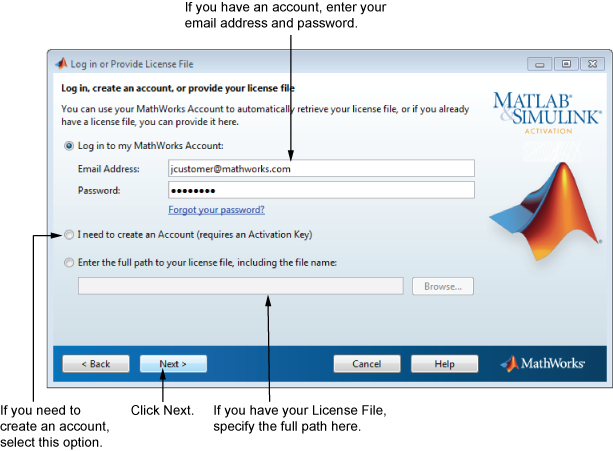

输入 MathWorks® 帐户的电子邮件地址和密码，然后点击“下一步”。激活应用程序将与 MathWorks 联系，获取与您的帐户相关联的许可证。
如果您没有 MathWorks 帐户，请选择“我需要创建帐户（需要激活密钥）”选项，并点击“下一步”。
如果已有许可证文件，请选中“输入许可证文件的完整路径（包括文件名）”选项，指定该文件的完整路径，然后点击“下一步”。许可证文件用于确认可运行的产品。请与许可证管理员联系以获取此许可证文件。在指定许可证文件后，激活应用程序将跳过此过程中的所有后续步骤，直接转至“激活完成”对话框。
